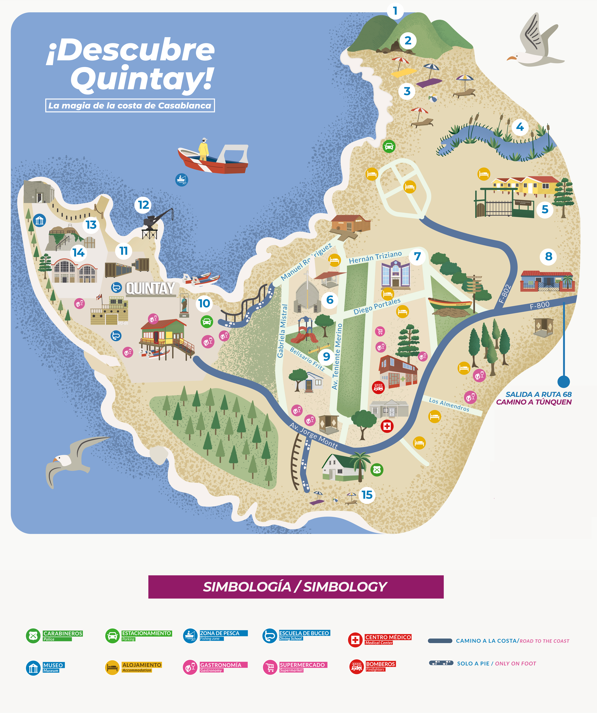

QUINTAY · COSTA DE CASABLANCA
Explora Quintay.
Descubre sus playas, paisajes, patrimonio y lugares característicos mediante el mapa turístico de la localidad.
Explorar el mapa15 lugares para descubrir.
Selecciona los números del mapa para conocer los distintos atractivos que forman parte de Quintay.
EXPLORACIÓN INTERACTIVA
Mapa turístico de Quintay

Selecciona un número para conocer cada atractivo.
Material turístico municipal de Quintay.
SIMBOLOGÍA DEL MAPA MUNICIPAL
El mapa también identifica servicios y referencias útiles para los visitantes.
P
Estacionamiento
Z
Zona de pesca
B
Escuela de buceo
+
Centro médico
M
Museo
A
Alojamiento
G
Gastronomía
S
Supermercado
B
Bomberos
Quintay tiene mucho más por descubrir.
Continúa explorando la costa y los demás atractivos de la comuna de Casablanca.
Volver a Quintay